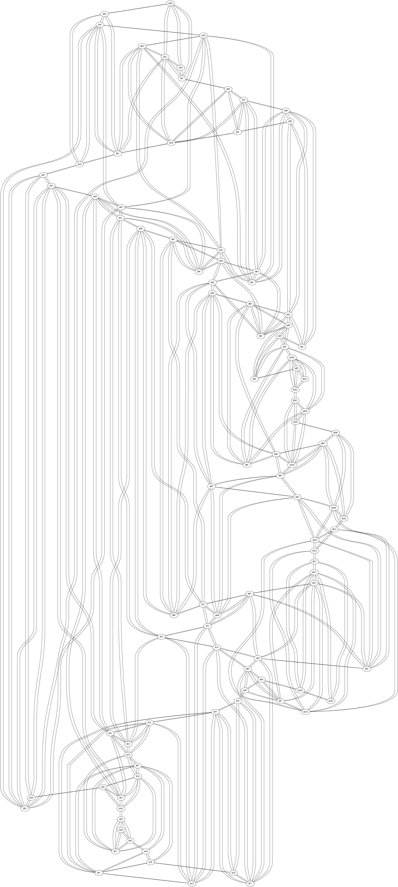
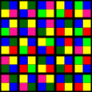

2012-05-07: Quilt Colouring
The source for this post is online at 2012-05-07-quilt-colouring.rkt.
I got this email from my wife:
> Honey,
> I’m making a quilt with 25 blocks. Each block has four colors on it. The colors I’m using are red, pink, green, yellow, blue, and green plaid.
> I don’t want to duplicate colors in a block or in the corners and I don’t want pink and red in the same corner (but pink and red in a block is okay.) Similarly with green and green plaid.
She’s a mathematician, so she knows about the Four color theorem. But she wasn’t sure if the graph was planar, and didn’t want to lay it out manually anyways.
Let’s work through the solution.
-
The first thing I wanted to do was see the structure of the quilt as a graph. Naturally, Graphviz is a natural choice. But, first I’d have to represent the graph in some way. I decided to go with a 5x5 matrix of blocks where each block was a structure of the four corner colors. The values of the nodes won’t really matter, so I’m just using unique symbols.
(struct block (ul ur ll lr)) (define (make-block) (block (gensym 'ul) (gensym 'ur) (gensym 'll) (gensym 'lr))) (define quilt (for*/hash ([x (in-range 5)] [y (in-range 5)]) (values (cons x y) (make-block))))
This is, of course, just a representation of the nodes. A graph also has edges. I decided to make another list of those. The first step is to turn a block into a list of edges. That’s pretty trivial:
(define block->edges (match-lambda [(block ul ur ll lr) (list (cons ul ur) (cons ul ll) (cons ul lr) (cons ur ul) (cons ur ll) (cons ur lr) (cons ll ul) (cons ll ur) (cons ll lr) (cons lr ul) (cons lr ur) (cons lr ll))]))
If we loop through each of the blocks and call this, appending the results together, we’d get a bunch of disconnected sub-graphs. We’d just need to add in the block-crossing (i.e. corner) edges. The structure will look like this:
<block-to-edges> (define edges (apply append (for*/list ([x (in-range 5)] [y (in-range 5)]) <edges-per-block>)))
I briefly thought about making a new for form that did the appending as it went, rather than using the (apply append ....) pattern, but decided it wasn’t worth the time right here.
The inner part of the loop is a little bit complicated though, at least if we want to do it elegantly. The problem is that on the edges there aren’t adjacent blocks, so we don’t want to try connect them with the block under consideration. I use a cute little macro that sets up an exception handler that will just return an empty list if an inner hash-ref fails.
(define-syntax-rule (out e) (with-handlers ([(λ (x) (eq? x 'bot)) (λ (x) empty)]) e)) (define (q x y) (hash-ref quilt (cons x y) (λ () (raise 'bot)))) (define b (q x y)) (append (out (list (cons (block-ul b) (block-lr (q (- x 1) (- y 1)))))) (out (list (cons (block-ul b) (block-ur (q (- x 0) (- y 1)))))) (out (list (cons (block-ul b) (block-ll (q (- x 1) (- y 0)))))) (out (list (cons (block-ur b) (block-lr (q (- x 1) (+ y 0)))))) (out (list (cons (block-ur b) (block-ll (q (- x 1) (+ y 1)))))) (out (list (cons (block-ur b) (block-ul (q (- x 0) (+ y 1)))))) (out (list (cons (block-ll b) (block-lr (q (+ x 0) (- y 1)))))) (out (list (cons (block-ll b) (block-ur (q (+ x 1) (- y 1)))))) (out (list (cons (block-ll b) (block-ul (q (+ x 1) (- y 0)))))) (out (list (cons (block-lr b) (block-ll (q (+ x 0) (+ y 1)))))) (out (list (cons (block-lr b) (block-ul (q (+ x 1) (+ y 1)))))) (out (list (cons (block-lr b) (block-ur (q (+ x 1) (+ y 0)))))) (block->edges b))
I thought about working out which edges I didn’t need to write down because the graph is undirected, but figure that since the size of the graph is so small it doesn’t really matter if I have a few extra edges.
(define-runtime-path the-graph-path "tmp/2012-05-07-quilt-colouring.graph.dot") (define-runtime-path the-graph-png-path "tmp/2012-05-07-quilt-colouring.graph.dot.png") (with-output-to-file the-graph-path #:exists 'replace (λ () (printf "graph {\n") (for ([e (in-list edges)]) (match-define (cons u v) e) (printf "\t~a -- ~a;\n" u v)) (printf "}\n"))) (unless (system* (find-executable-path "dot") "-Tpng" the-graph-path (format "-o~a" the-graph-png-path)) (error 'quilt-colouring "dot failed :("))
You can see the dot file here: dot file, but unfortunately the picture wasn’t very helpful. You can see it here: 
Now that I have the edges, I can create an adjacency list really simply:
(define graph (for/fold ([graph (hasheq)]) ([e (in-list edges)]) (match-define (cons u v) e) (hash-update graph u (curry list* v) empty)))
Now that I have graph structure, it’s a simple matter of selecting colors. I decided to write it as an exhaustive greedy search, with randomness (for artistic reasons). For every node u connected to nodes vs, figure out what the options are, shuffle them, and try them in order:
(define vs-colours (append-map (λ (v) (hash-ref colouring v empty)) vs)) (define u-options (shuffle (remq* vs-colours colours)))
I decided to have the colouring be a hash table where the values where singleton lists (to facilitate the call to append-map.)
The interesting thing comes from properly handling back-tracking in case a choice leads to an empty option list eventually. In addition to folding the colouring, I also have a fail procedure that goes back.
(define *backtracks* 0) (define-values (colouring fail) (for/fold ([colouring (hasheq)] [fail (λ () (error 'quilt-colouring "Can't colour :("))]) ([(u vs) (in-hash graph)]) <colour-per-node> (let/ec return (for ([option (in-list u-options)]) (let/cc try-another-option (return (hash-set colouring u (list option)) (λ () (try-another-option))))) (set! *backtracks* (add1 *backtracks*)) (fail)))) *backtracks*
For the heck of it, I decided to keep track of how many back-trackings happened. While the use of continuations to implement back-tracking is definitely neat, unfortunately I’ve never run it and observed any failures. (Unless I reduce the number of colours to three, in which case it fails.)
Now that I have a colouring, how can I show it to my wife? Well, I’ll just render it out. Racket’s 2htdp/image library supports an algebra of images that will make this really simple.
First, we’ll render each individual square in the quilt as a square, assuming we have a way of turning our colours into colors that Racket supports.
Then, we’ll assemble each block (and give it a nice thick outline):
(define (render-block c b) (match-define (block ul ur ll lr) b) (overlay (above (beside (render-square c ul) (render-square c ur)) (beside (render-square c ll) (render-square c lr))) (square 23 'solid "black")))
Finally, we go through and put each block in the right order:
(define (render-quilt c quilt) (for*/fold ([image empty-image]) ([x (in-range 5)]) (above image (for*/fold ([image empty-image]) ([y (in-range 5)]) (beside image (render-block c (hash-ref quilt (cons x y))))))))
Then stitch it all together and save it to a file:
(define-runtime-path the-png-path "tmp/2012-05-07-quilt-colouring.png") <render-square> <render-block> <render-quilt> (save-image (render-quilt colouring quilt) the-png-path)
The final thing is to write the function to translate between our colours and Racket’s colors. For simplicity, I’ve made a stronger colouring than my wife wanted. She didn’t want some colours to connect across corners, but I have treated every color uniformly. Even though she will use six colours, I’m really only using four and delaying the selection of which of the two variations of green and red she uses for the end.
(define colours '(red-or-pink green-or-green-plaid yellow blue)) (define quilt-colour->racket-color (match-lambda ['green-or-green-plaid (if (zero? (random 2)) "Green" "DarkGreen")] ['yellow "Yellow"] ['blue "Blue"] ['red-or-pink (if (zero? (random 2)) "Red" "DeepPink")]))
You can see an example colouring:

When she finishes the quilt, I’ll update this post with a picture of what she went with.
(*UPDATE* Here’s her blog post about the finished quilt: read it!)
By the way, if you use this code at home, make sure you put the code in this order:
(require racket/list racket/function racket/match racket/system racket/runtime-path 2htdp/image) <color-definitions> <the-nodes> <the-edges> <print-it> <the-graph> <colouring> <render>